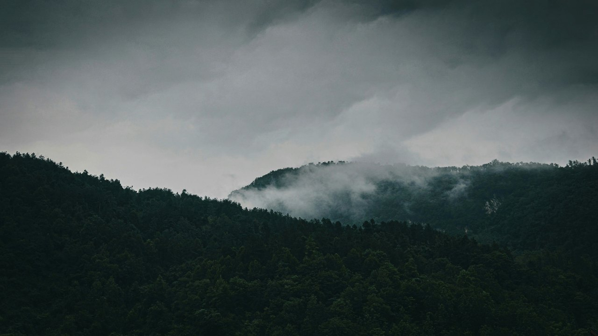
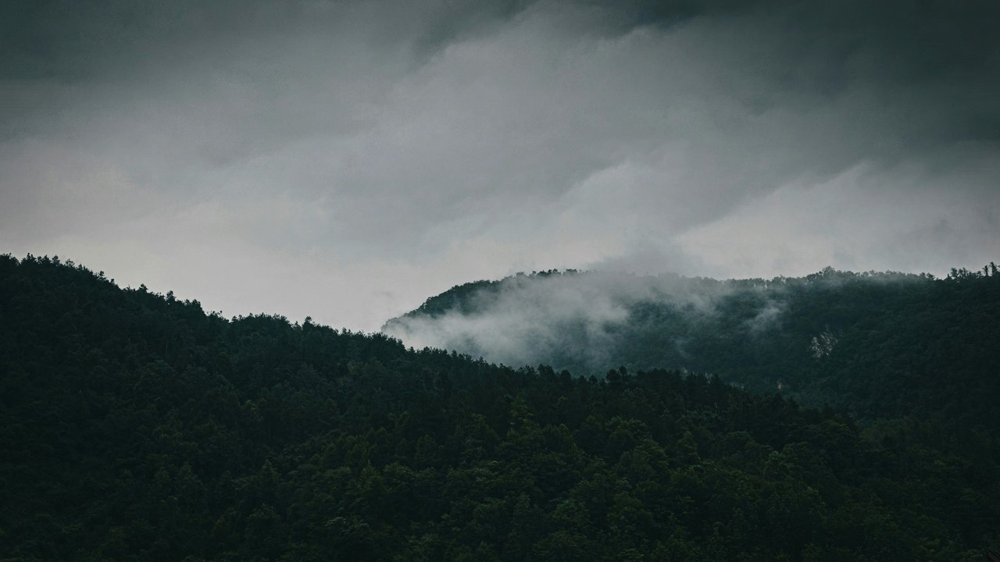
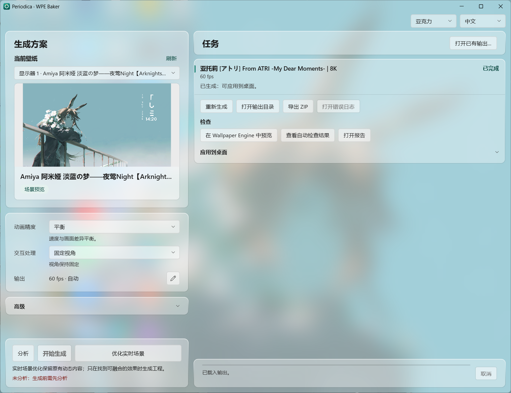
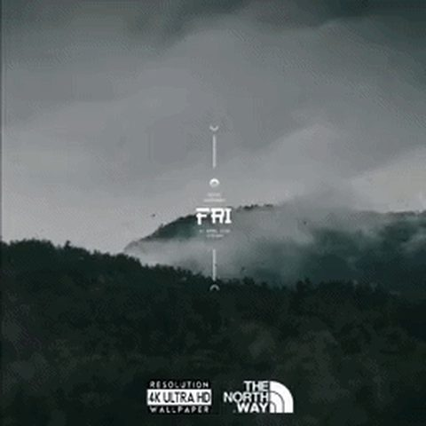
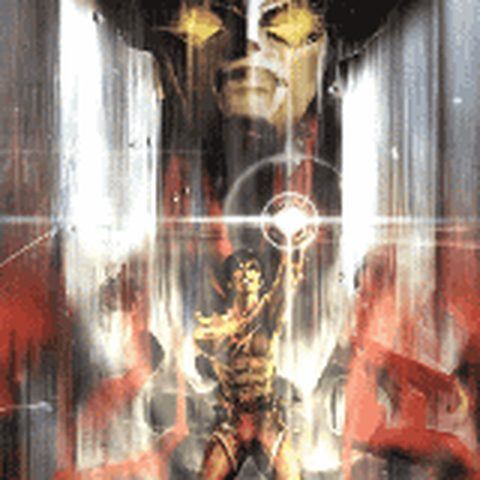

Periodica 分析 Wallpaper Engine 场景，通过数学建模协调其中可烘焙动画的周期，让画面形成首尾衔接的循环，再以视频形式播放。时钟、音乐响应等实时内容可以继续保留，在维持动态画面效果的同时，减少重复渲染的开销。它的首个应用是面向 Wallpaper Engine 的 WPE Baker。
帧对比工具通过画面寻找重复点；Periodica 则直接分析动画的数学关系，协调着色器时间、动画轨道、粒子循环和视频时间基准，为可烘焙的内容求解循环。彼此独立的视频组可以采用各自的周期，无需等待整个场景同时回到起点。拖动分隔线，可以比较上方循环的第一帧和最后一帧。


第 1 帧第 3,000 帧假设一个波浪动画的周期是 7.3 秒，一个摆动是 11.1 秒，一个粒子循环是 4.6 秒，一段视频又是 20 秒，它们同时回到起点可能需要很长时间，未必适合直接录成循环视频。Periodica 分别求出每个组件的周期，在所选预算内微调播放速度，让需要共同播放的动画形成首尾衔接的循环。
三个精度预设限定了允许调整的幅度，即“可见变化预算”：效率（Efficiency）5%，平衡（Balanced）3%，质量（Quality）采用仍然能够闭合循环的最小改动。程序会优先寻找调整更小的方案，并在报告中列出实际采用的周期和调速幅度。
每个组件的调整幅度都有单独上限。对于周期很长的慢速运动，程序还会结合位移和速度变化判断能否闭合。无法满足条件的内容保留实时运行，报告会说明具体图层及原因。
生成过程中，程序会追加渲染循环点附近的画面，检查编码后的接缝，并对照烘焙内容与实时图层合成后的结果。只有相应检查通过，输出才会被接受。
WPE Baker 的界面采用先进的液态玻璃美学设计，将壁纸选择、生成方案和任务队列集中在同一窗口。程序可以自动读取当前壁纸，也支持拖入文件夹或场景文件；分析后调整精度、交互方式和输出规格，生成完成后直接预览、应用或导出成品。
程序会读取 Wallpaper Engine 当前使用的壁纸。你也可以直接拖入壁纸文件夹或场景文件，开始分析。
分析结果会列出可生成的内容和需要保留的实时部分。动画精度、交互处理、帧率与分辨率都可以在左侧调整，壁纸自身的可调属性也会一并显示。
生成任务集中显示在右侧，可以查看进度和检查结果。完成后可在 Wallpaper Engine 中预览、应用到指定屏幕、导出 ZIP，或恢复之前的壁纸。

测试平台为搭载 Intel Arc B390 的笔记本电脑，使用官方 Wallpaper Engine，以 A/B/B/A 顺序对照原始场景与烘焙输出。成品设置为 1920×1080、60 fps，采用平衡精度和默认壁纸属性；原作在 3072×1920 屏幕上正常渲染。核显功耗与 CPU 封装功耗分别记录。


| 壁纸 | 原作核显功耗 | 烘焙后 | 变化 | CPU 封装：原作 → 烘焙后 |
|---|---|---|---|---|
| Nijika (Bocchi the Rock!)3650475846 | 20.98 W | 14.74 W | −29.7% | 31.13 → 26.95 W |
| Alone（日/夜场景）3448877775 | 5.74 W | 4.90 W | −14.7% | 15.08 → 15.03 W |
| Atri — My Dear Moments3669681034 | 8.39 W | 0.26 W | −96.9% | 16.11 → 7.94 W |
| Ultraman Leo3685247684 | 8.99 W | 1.43 W | −84.1% | 17.87 → 9.71 W |
| Yuri3572877776 | 2.25 W | 0.45 W | −80.0% | 10.55 → 8.40 W |
| Frieren — Pagoda of flowers3426865175 | 10.67 W | 7.79 W | −27.0% | 20.00 → 18.74 W |
| Lost Landscape 33713073223 | 8.14 W | 3.48 W | −57.2% | 17.13 → 12.84 W |
| Ayanami Rei3258032485 | 2.28 W | 0.13 W | −94.4% | 8.85 → 7.15 W |
随着播放帧率提高，原始场景需要实时渲染更多画面。将周期动画烘焙为视频后，视频解码器承担这部分播放工作，减少 3D 引擎逐帧重复渲染的负担。时钟、音频响应等保留的实时内容仍然按原有方式运行。
这个项目最初就是在一台使用 iGPU 的笔记本电脑上开始的。
| 壁纸 / 帧率 | 原作核显功耗 | 烘焙后 | 变化 | CPU 封装：原作 → 烘焙后 |
|---|---|---|---|---|
| Atri · 60 fps | 8.40 W | 0.26 W | −96.9% | 16.22 → 8.14 W |
| Atri · 165 fps | 25.56 W | 2.24 W | −91.2% | 38.30 → 13.77 W |
| Ayanami Rei · 120 fps | 8.62 W | 1.50 W | −82.6% | 18.00 → 11.56 W |
交互处理提供“保留”“固定视角”和“关闭”三种模式，默认使用“固定视角”。
“保留”模式保留鼠标与音频响应。无论选择哪种模式，时钟、日期和媒体文本都会继续实时更新。
一张 Wallpaper Engine 场景可能包含数百种着色器变体、粒子系统、脚本控制器和视频图层。要把它们烘焙成循环，仅仅寻找两张相似的画面并不足够：程序需要知道动画如何随时间变化，以及哪些内容必须继续响应实时输入。
Periodica 用着色器时间分析取代了早期的周期方程库。程序对实际编译得到的 SPIR-V 进行抽象解释，沿数据流追踪时间变量，推导周期、持续漂移，以及经过一段时间后停止变化的动画。不必为每一种新效果单独编写方程，陌生的自定义着色器也可以进入分析。
求出周期之后，程序还会寻找能够局部调整的参数。一个效果里的水波、光晕和滚动不必再一起加速；程序将会分别协调能够独立调整的运动，彼此独立的视频组也将按各自的周期循环。
作者脚本同样纳入时间分析。恒定值、周期变化和只在开场发生的动画可以被识别；对于能够精确模拟的跨帧状态，程序会寻找状态重新出现的时刻。真正依赖鼠标、音频和时钟的内容则保留实时运行。
为了把烘焙结果放回原场景，Periodica 还需要处理透明度、混合顺序和 HDR 中间画面。超出普通视频范围的亮度经过映射存入视频，再由生成的着色器还原，使缓存后的内容能够继续参与作者原有的效果链。
Periodica 在 open-wallpaper-engine 的基础上，重构了场景执行与 Vulkan 离线渲染流程。着色器、脚本、粒子和视频按确定的时间步推进，模拟、绘制与采样分别调度：预热不再反复读回随后丢弃的画面，起点搜索只绘制需要比较的帧，独立的视频组按各自的周期生成。
早期版本的烘焙过程中，透明画面需要经过整帧回读、CPU 扫描、无损母版和二次编码。现在裁剪、透明度处理与循环淡化都接入 GPU 流程，再直接送入硬件编码器，减少数据往返、中间文件和重复计算。性能提升来自整条生成流程的改造。
在 RTX 5090 D v2 的同场景对照中，4K 完整烘焙耗时由 108 秒缩短至 17 秒，提速 6 倍以上。另一项 4K 长场景测试中，从分析到生成达到 3.7 倍实时，约 70 秒完成 4 分 18 秒的 4K 60 FPS 动画。
我们围绕兼容性与生成效率进行了充分打磨：以 489 张真实创意工坊壁纸进行兼容性回归，并选取 12 张不同类型的场景完成 4K 渲染与视频导出测试。
在同一批壁纸中，可烘焙场景从 1.0.2 的 244 张扩展到 444 张，覆盖率达到 90.8%。纳入测试的 41 张热门作品中，覆盖数量从 22 张增加到 37 张。
2.1 继续优化共用渲染路径。在同一组 24 个测试场景中，整帧渲染相对 2.0.0 的中位提升为 RTX 5090 D v2 2.00 倍、Intel Arc B390 1.58 倍。
性能测试以五款开源渲染器的实测结果作为参考。在 RTX 5090 D v2 的 4K 场景测试中，Periodica 的平均渲染速度为参考结果的 2.72–6.28 倍，视频导出平均为 2.79 倍实时。
| 回归覆盖 | 1.0.2 | 2.1 |
|---|---|---|
| 可烘焙场景 | 244 / 489 | 444 / 489 |
| 覆盖率 | 49.9% | 90.8% |
| 热门作品 | 22 / 41 | 37 / 41 |
| 壁纸 | 渲染帧率 / FPS | Periodica 视频导出秒 · 倍实时 | |||||
|---|---|---|---|---|---|---|---|
| Periodica | WebWallGL | Almamu | Portghost | Mac renderer | AnisPaper | ||
| Kirby | 518.6 | 182.1 | 150.6 | 超时 | 160.9 | 86.4 | 3.592.78× |
| 亚托莉 | 631.1 | 229.4 | 171.6 | 191.0 | 170.7 | 87.1 | 3.532.83× |
| 绫波丽 | 665.8 | 232.0 | 168.7 | 195.6 | 171.1 | 86.2 | 3.412.93× |
| 虹夏 | 402.1 | 136.4 | 146.5 | 超时 | 139.1 | 80.6 | 3.472.88× |
| 芙莉莲 | 506.9 | 185.8 | 166.8 | 128.6 | 143.5 | 87.0 | 3.372.96× |
| Alone | 391.0 | 175.6 | 143.4 | 超时 | 138.2 | 76.8 | 3.502.86× |
| Lost Landscape 3 | 491.4 | 199.7 | 148.0 | 超时 | 146.7 | 92.6 | 3.313.02× |
| 土星 | 364.6 | 181.2 | 不兼容 | 超时 | 不兼容 | 不兼容 | 7.712.60× |
| 实时太阳系 | 178.4 | 108.7 | 不兼容 | 超时 | 不兼容 | 不兼容 | 9.792.04× |
| 德累斯顿 | 815.8 | 245.7 | 175.5 | 201.6 | 203.1 | 96.8 | 3.183.15× |
| DELTARUNE Door | 970.1 | 268.0 | 超时 | 超时 | 超时 | 超时 | 4.282.34× |
| 夜之城 | 529.7 | 166.8 | 不兼容 | 超时 | 不兼容 | 90.0 | 3.183.14× |
| Periodica 平均速度比 | — | 2.72× | 3.44× | 3.67× | 3.43× | 6.28× | 2.79×实时 |
将可重复的场景动画烘焙成视频，并与保留的实时内容一同放回原场景。Wallpaper Engine 是 Periodica 的第一个应用场景。
以着色器和脚本时间分析取代逐项维护的周期方程，扩展可烘焙的动画范围。独立视频组采用各自的循环周期，完善 HDR 中间画面的处理，并减少生成过程中的数据回读、重复编码和等待。
减少重复准备、状态绑定和快照拷贝，跨帧复用未变化的渲染结果，让离线渲染吞吐显著提高，画面保持不变。
通过缓存、复用、预计算和确定性重放，让更多实时图层进入实用的烘焙范围，并引入基于 AI 加速的全新构建方案。
利用历史帧与运动信息重建画面，减少每一帧都从头渲染的工作，并探索 GPU 与 NPU 的协同加速。
让喜欢的动态壁纸以更低的功耗运行。
轻量场景本身没有多少可节省的空间，工具会在渲染之前直接说明。功耗较高、以周期性动画为主的场景才是 15–97% 降幅的来源；以交互为主的场景则会烘焙其中确定性的核心部分，其余交互与实时内容分别处理。
可见变化预算由你选择：效率、平衡或质量。报告会逐项列出每一个被重新定时的组件及其精确百分比。接缝会根据原始场景自身的运动进行验证，通过之后输出才会被接受。
Windows、Wallpaper Engine，以及一块用于离线渲染的 GPU。便携版没有安装程序，也不需要 Python。烘焙一个典型场景需要几分钟；播放时由视频解码器处理烘焙内容，保留的实时图层继续渲染。
是。工具层采用 MIT 许可，渲染器采用 GPL v2；完整源码、第三方声明与构建记录都在仓库中。